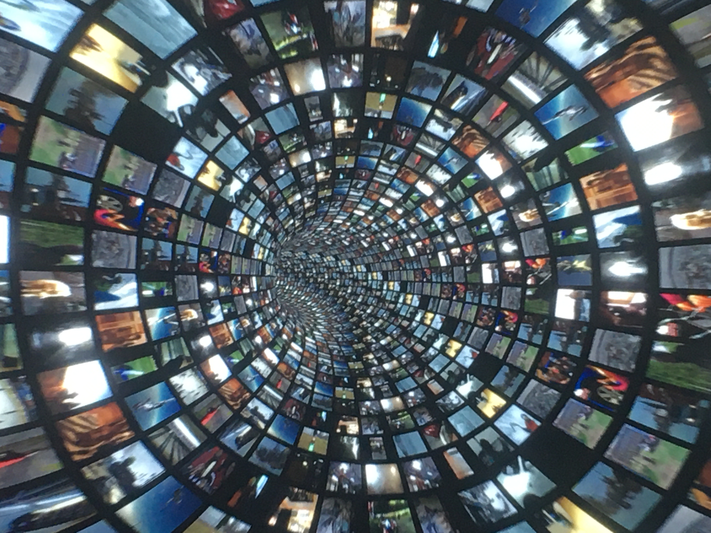
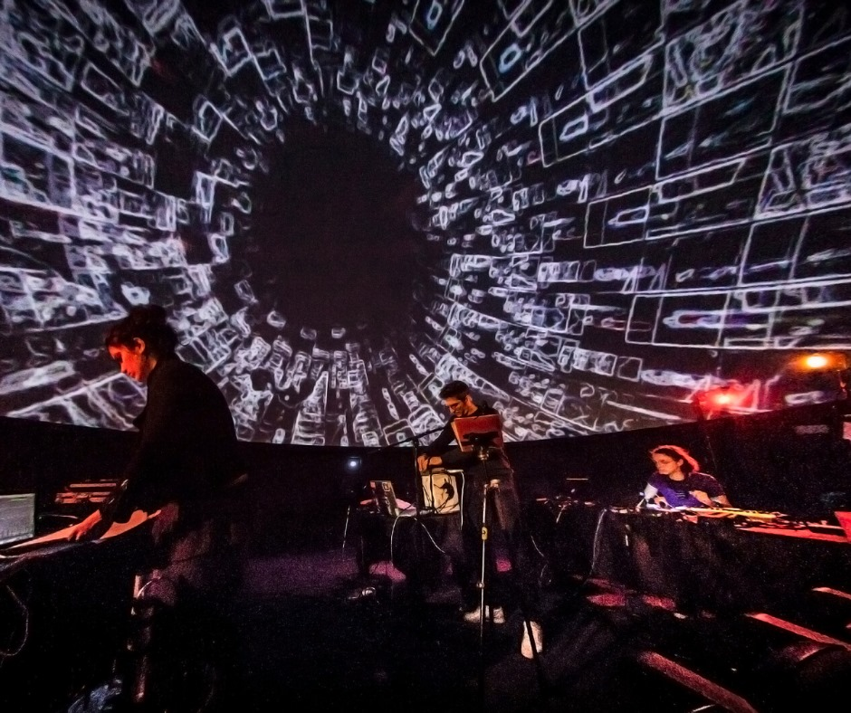

Planétarium de Vaulx-en-Velin
Curateur: Pierre Amoudruz
Performance immersive sous dôme
La performance présentée lors de la restitution Souvenirs du futur se compose d’une vidéo diffusée sous dôme à 180° accompagnée d’une composition musique expérimentale pour voix, waterphone, disque dur et guitare préparée.
Elle développe un rapport au temps qui n’est plus un temps chronologique, fléché mais un flux où passé et futur se mêlent. Le dôme recrée ainsi une sorte d’immersion dans la conscience d’un individu.
Les textures des graphismes 3D sont faits de banque de données vidéos, infinie, comme des souvenirs de vie entrelacés, des bribes de mémoire qui s’entrecoupent de vidéos de souvenirs formant finalement une vision d’un futur.
Inspirée par La Jetée de Chris Marker et de la pensée de Bergson sur le rapport à l’espace et au temps, l’immersion et le traitement en temps réel des images et du son essaient de transfigurer cette notion de durée.
“Ce que nous percevons en fait, c’est une certaine épaisseur de durée qui se compose de deux parties : notre passé immédiat et notre avenir imminent. Sur ce passé nous sommes appuyés, sur notre avenir nous sommes penchés: s’appuyer et se pencher ainsi est le propre d’un être conscient. Disons donc, si vous voulez, que la conscience est un trait d’union entre ce qui a été et ce qui sera, un pont jeté entre le passé et l’avenir. »
Images:

